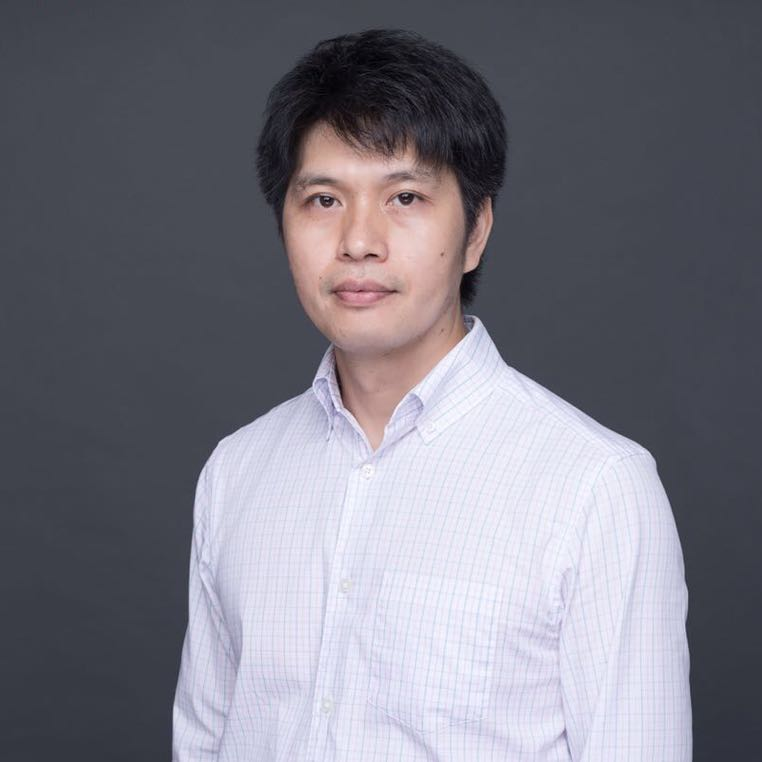
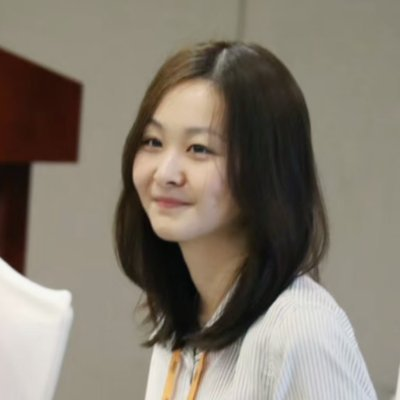

2026年6月5日，由中国图像图形学会主办，可视化与可视分析专业委员会与香港科技大学（广州）计算媒体与艺术学域承办的CSIG-VIS国际论坛"人工智能、可视化与图形学的交叉融合"（The Convergence of AI, Visualization, and Graphics）在香港科技大学（广州）顺利举行。本次论坛汇聚了来自荷兰、新加坡多国的四位国际知名学者，聚焦前沿技术创新思路与交叉学科融合路径，围绕AI与可视化与可视分析、图形学与人机交互等交叉方向展开了深度的学术分享，共同探讨学科交叉创新发展与高质量人才培养的新范式。
乌得勒支大学Alexandru Telea教授在《What is a Good Projection – and Why We Should Care About It》的报告中聚焦于高维数据投影的质量评估与可信性反思。他指出，降维投影的选择应基于特定任务而非盲目寻找最优算法，将投影质量指标本身进行可视化以直观展示误差区域。由于不存在普适的最优投影，同时许多高质量指标极易被神经网络欺骗，他提出通过组合互补指标来构建多指标证据体系，使可视分析系统能够同时展示结果、误差与不确定性。

香港科技大学（广州）副教授梁海宁以《Leveraging Mixed Reality Technology for Developing New Interaction Paradigms》为题分享了如何使用混合现实技术改变人机交互范式。交互正从二维屏幕走向空间与多模态融合，梁教授介绍了团队在无手交互和身体多模态输入方面的探索，如利用头动和眼动输入文本、利用腿部动作进行空间导航。他还展示了结合二维屏幕与混合现实三维空间优势的跨现实探索系统。他提出通过捕捉用户视线和动作轨迹进行意图预测与行为建模，以动态调整反馈，提升操作效率并减少用户疲劳，从而重塑人和信息的关系。
新加坡科技设计大学助理教授宋鹏聚焦《Geometry and Visualization: Building Intelligent Design Tools》，探讨了图形学与可视化如何支撑智能设计工具。当前的生成式AI模型往往只具备外观相似性，却缺乏能满足装配制造与运动约束的功能性。为此他提出了包含设计表示、设计评估和设计探索的智能工具框架，并以几何互锁立体拼图为例，展示了如何自动生成满足特定制造和难度约束的设计方案。他强调智能设计需兼顾算法与人类感知，未来应推动AI与物理、材料及运动约束的深度结合。

香港科技大学助理教授韩俊以《Neural Fields for Time-Varying Ensemble Volumetric Data Compression and Exploration》为题介绍了利用神经场解决大规模时变科学数据计算与存储瓶颈的方案。神经场通过神经网络学习坐标与物理量的映射，实现了连续且轻量的信号表达。他展示了将混合专家思想引入神经场的压缩框架，在极高压缩比下有效消除了边界伪影，同时通过分离参数与空间分支，支持给定新参数时的时变序列生成与相似性检索，这种方法相比传统仿真大幅降低了成本。
本次CSIG-VIS国际论坛通过四位学者的前沿分享深入探讨了未来学术与工业应用中人工智能、可视化与图形学交叉融合的宏伟图景，不仅重塑了未来的研究与应用思维，也为交叉学科的发展注入了全新活力。香港科技大学（广州）诚挚感谢各位的关注，并期待在下期论坛与您再次相见！